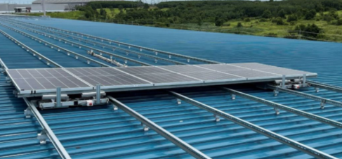

Rooftop and ground-mounted systems. Up to 40% lower structure cost.
Professional experience
MECHANICAL DESIGN ENGINEER / THAILAND
Mechanical design.
Simulation. Manufacturing.
I’m Arm. I develop extrusion dies, sheet metal assemblies and solar mounting systems—with production and testing in mind.

01 / SELECTED EXPERIENCE & PROJECTS
From design and simulation
to the details of production.
Showing 6 of 6 entries
Rooftop and ground-mounted systems. Up to 40% lower structure cost.
Professional experience
QForm simulation, die development and trial-based design improvements.
Professional experience
Production drawings, flat patterns and manufacturing support.
Professional experience
Structural analysis and extrusion simulation linked to physical testing.
Professional capability
A local assistant with a FreeCAD connection and ongoing workflow development.
In development
Frame and assembly studies. Hardware validation is still ahead.
Concept / not flight-tested
Try a different search or category.
Professional experience is drawn from my CV. Personal projects are marked by development stage. Professional-work images are from my supplied CV. AI Local and drone visuals are labeled AI-generated concepts.
02 / PROFESSIONAL EXPERIENCE
From product development at SolarD to fabrication at ANCA and extrusion die design at Alumet.
Extrusion die development, QForm simulation, trial planning and design corrections. Additional responsibilities include department coordination and monthly KPI reporting.
Manufacturability reviews, sheet metal CAD, technical drawings, BOMs and production support across fabrication and assembly.
Solar mounting development, structural FEA, prototype validation and supervision of two junior engineers.
03 / HOW I WORK
Understand the constraints.
Use the results in the next revision.
Review requirements, dimensions and manufacturing constraints. Develop CAD and drawings that production teams can use.
CAD · GD&T · DFM · BOMUse simulation, prototypes and trials to evaluate structural behavior, extrusion flow and design performance.
QFORM · NASTRAN · FEA · TRIALSWork with production and quality teams, investigate issues and turn inspection results into design corrections.
ROOT CAUSE · DESIGN REVISION · KPISuranaree University of Technology · 2018–2021
04 / CONTACT